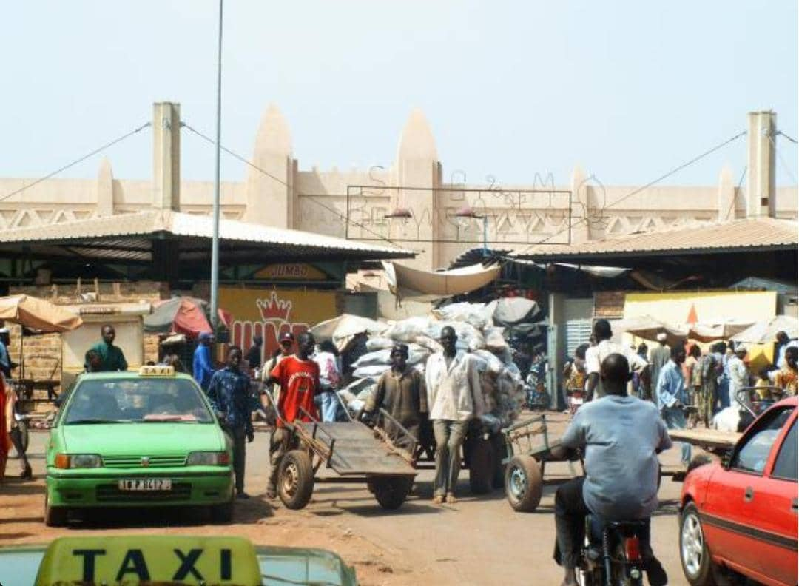

Vieux Marché de Bobo-Dioulasso
Description
Le vieux marché de Bobo-Dioulasso, situé en plein centre-ville, est l’un des plus anciens et des plus animés du Burkina Faso. Il regorge de produits locaux : légumes, fruits, épices, tissus traditionnels, objets artisanaux, etc. C’est un lieu vivant, coloré et chaleureux où se mêlent les senteurs, les langues et les cultures.
Historique
Fondé à l’époque précoloniale, ce marché est un centre névralgique de l’économie locale depuis des siècles. Il a survécu aux différentes périodes historiques tout en gardant son rôle de cœur battant de la ville. Lieu d’échange, de rencontres et de traditions, il continue de jouer un rôle essentiel dans la vie quotidienne des Bobolais et attire de nombreux touristes désireux de découvrir l’authenticité de la culture burkinabè.